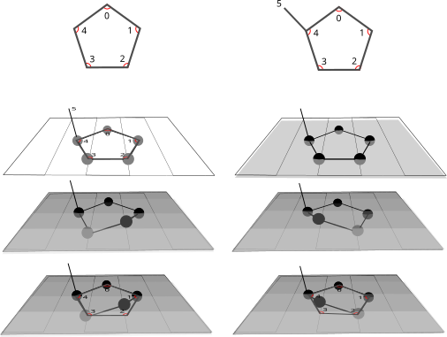

Estrutura eletrônica, barreiras rotacionais e efeitos estéricos e estruturais
A longa jornada em busca do entendimento da influência das conformações da ribose na estrutura do RNA perpassa pelo entendimento da definição de ângulo de torção e pseudorotação estabelecida na década de 1947. Como será discutido, esta definição foi feita por Kilpatrick e colaboradores em relação às posições e deslocamentos dos átomos de carbono do anel, enquanto Altona (1972) trata de ângulos. Apesar do trabalho de Altona ser amplamente referenciado por tratar de torções em ângulos, o trabalho seminal fora feito por Kilpatrick. Duas abordagens são referenciadas, ambas com formalismo muito semelhante e com a definição de fase — desenvolvida para o entendimento das possíveis orientações do ciclopentano.
No anel ciclopentano, as forças de torção em torno das ligações estão em oposição às forças que tendem a manter a conformação planar tetraédrica e dão origem à conformação com átomos projetados para fora do plano [1]. Os átomos nesta situação — puckered ring — estão organizados numa conformação de menor energia em comparação com a não retorcida [1].
No anel simétrico, as diferenças entre as posições dos átomos são pequenas, mas suficientes para dar origem ao sugar puckering [1][2][3]. Duas conformações de menor energia são possíveis para o anel de cinco membros: a conformação envelope e a conformação twist [2]. Na molécula de açúcar, onde existem substituintes, as interações entre estes grupos e a sobreposição entre eles causam maior torção da molécula e maior desvio em relação à estrutura planar [2]. O conjunto completo de estados acessíveis ao anel pode ser visualizado no espaço de conformações, que organiza as geometrias possíveis em função dos parâmetros de amplitude e fase.
Existe uma predominância das projeções dos átomos de carbono na direção do carbono C5' da ribose. Os carbonos das posições 2' e 3', quando a ribose se encontra na conformação twist, podem estar projetados na direção da ligação C4'–C5' ou na direção oposta, denominada exo. Desta forma, eles se encontram nas posições C2'-endo–C3'-exo ou C2'-exo–C3'-endo, comumente chamadas C2'-endo e C3'-endo, respectivamente [2]. Estas duas conformações existem em equilíbrio [2][3]; porém, a transição entre as mesmas não passa pela estrutura planar do anel, e sim por um arranjo mais complexo [2][3]. A distribuição experimental de energia ao longo deste equilíbrio está registrada no panorama energético experimental.
Este conceito foi desenvolvido para a descrição dos estados conformacionais dos anéis de ciclopentano [1], mas encontrou grande aplicação em ácidos nucleicos, especialmente na descrição das conformações de riboses [2][3]. Define-se um ângulo de fase P que assume os valores de 0° e 180° quando os ângulos μ₂ e μ₃ assumem valores máximos, respectivamente [2]. Estas são as condições C2'-endo e C3'-endo, respectivamente.
Dado o ângulo de fase P, os ângulos de torção se relacionam por νi = νmax cos(P + j·f), onde j é o índice que representa o ângulo (de 0 a 4) e f é a fração de ângulo 720°/5 = 144°. Esta definição supõe deformações harmônicas compatíveis com a geometria da molécula. A correspondência entre estes valores teóricos e os dados computacionais está ilustrada no panorama energético teórico.
[Texto adicional a ser inserido aqui.]
[Sobre modificações no esqueleto — descrição a ser expandida.]
[Descrição das implicações conformacionais para as modificações químicas estudadas.]
© 2026 Daniel Batista de Jesus
Documento estruturado para inserção de figuras e expansão futura do texto.
[Descrição: representação do espaço conformacional da ribose, indicando as regiões de C2'-endo e C3'-endo e os caminhos de interconversão ao longo do ângulo de pseudorotação P. Fonte: a inserir.]
[Descrição: perfil de energia livre experimental em função do ângulo de pseudorotação P, obtido a partir de dados de RMN ou cristalografia. Indicar os mínimos correspondentes a C2'-endo e C3'-endo. Fonte: a inserir.]

[Descrição: perfil de energia calculado computacionalmente como função do ângulo de pseudorotação P (0° a 360°), mostrando os mínimos em P ≈ 18° (C3'-endo) e P ≈ 162° (C2'-endo). Método e nível de teoria a especificar. Fonte: a inserir.]